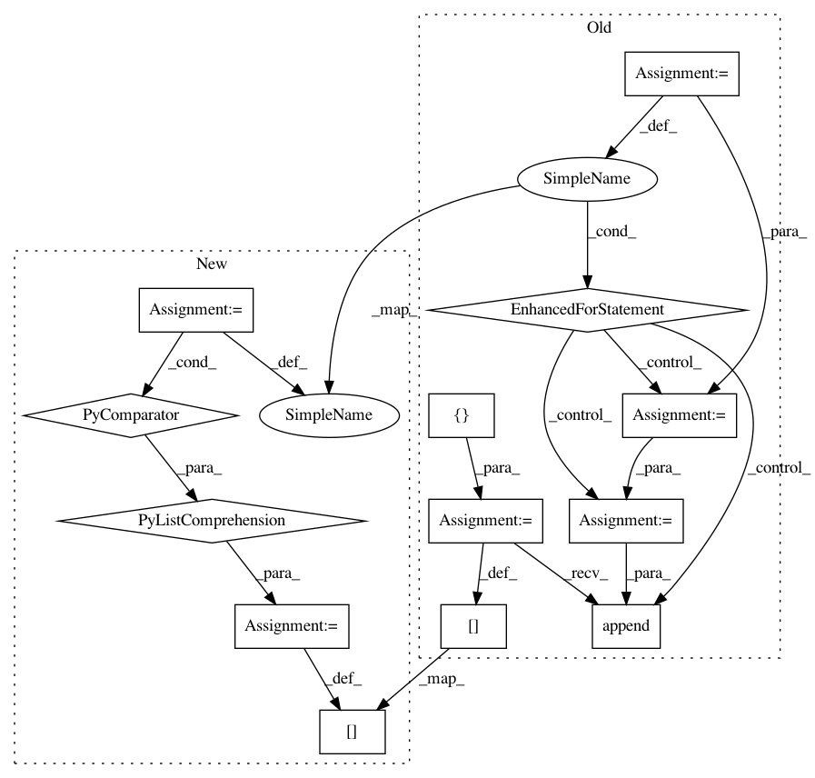

9bdbb11cf27060e7847a87dcdf691dd6b96ce6df,rlkit/data_management/obs_dict_replay_buffer.py,ObsDictRelabelingBuffer,random_batch,#ObsDictRelabelingBuffer#Any#,171
Before Change
num_rollout_goals:last_env_goal_idx] = \
env_goals[goal_key]
if num_future_goals > 0:
future_obs_idxs = []
for i in indices[-num_future_goals:]:
possible_future_obs_idxs = self._idx_to_future_obs_idx[i]
// This is generally faster than random.choice. Makes you wonder what
// random.choice is doing
num_options = len(possible_future_obs_idxs)
next_obs_i = int(np.random.randint(0, num_options))
future_obs_idxs.append(possible_future_obs_idxs[next_obs_i])
future_obs_idxs = np.array(future_obs_idxs)
resampled_goals[-num_future_goals:] = self._next_obs[
self.achieved_goal_key
][future_obs_idxs]
for goal_key in self.goal_keys:
new_obs_dict[goal_key][-num_future_goals:] = \
self._next_obs[goal_key][future_obs_idxs]
new_next_obs_dict[goal_key][-num_future_goals:] = \
self._next_obs[goal_key][future_obs_idxs]
After Change
if num_future_goals > 0:
//// better future obs sample algorithm
future_indices = indices[-num_future_goals:]
possible_future_obs_lens = np.array([len(self._idx_to_future_obs_idx[i]) for i in future_indices])
next_obs_idxs = (np.random.random(num_future_goals) * possible_future_obs_lens).astype(np.int)
future_obs_idxs = np.array([self._idx_to_future_obs_idx[ids][next_obs_idxs[i]] for i, ids in enumerate(future_indices)])
resampled_goals[-num_future_goals:] = self._next_obs[
self.achieved_goal_key
][future_obs_idxs]
for goal_key in self.goal_keys:
new_obs_dict[goal_key][-num_future_goals:] = \
self._next_obs[goal_key][future_obs_idxs]
new_next_obs_dict[goal_key][-num_future_goals:] = \
self._next_obs[goal_key][future_obs_idxs]
In pattern: SUPERPATTERN
Frequency: 3
Non-data size: 13
Instances
Project Name: vitchyr/rlkit
Commit Name: 9bdbb11cf27060e7847a87dcdf691dd6b96ce6df
Time: 2020-08-09
Author: 38036768+YangRui2015@users.noreply.github.com
File Name: rlkit/data_management/obs_dict_replay_buffer.py
Class Name: ObsDictRelabelingBuffer
Method Name: random_batch
Project Name: WZBSocialScienceCenter/tmtoolkit
Commit Name: eb13c2ea02e0e06c06b288e3590ce04cc014ba04
Time: 2019-03-22
Author: markus.konrad@wzb.eu
File Name: tmtoolkit/topicmod/tm_gensim.py
Class Name: MultiprocEvaluationWorkerGensim
Method Name: fit_model
Project Name: pantsbuild/pants
Commit Name: 30dda3a132d6d74bed81fd51144a7247d02cea9a
Time: 2015-11-30
Author: zundel@squareup.com
File Name: src/python/pants/backend/core/tasks/reflect.py
Class Name:
Method Name: gen_tasks_options_reference_data